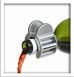

Sabiduría gala
El lector Nick Brown, de Strasbourg, Francia, informa de una muy sensata medida en su país:
La “Académia Nationale de Médecine”, la autoridad médica principal del país, ha exigido que el sistema de Seguro de Salud Nacional Francés deje de reembolsar las “medicinas” homeopáticas (¡las comillas son mías!), a menos que se sometan a las mismas pruebas de eficiencia médica que se aplican a todas las demás formas de tratamiento. El sistema hace poco dejó de lado varios medicamentos “normales” porque se estableció que producían resultados insuficientes.
El ataque de la Académie no es ambiguo en lo absoluto (traducción de Nick):
La homeopatía es una técnica imaginada hace doscientos años basada en conceptos sin base científica alguna. Desde entonces no ha sido más que una doctrina, no afectada por ninguna forma de progreso, en particular los notables avances de la ciencia que han transformado por completo la medicina en los dos últimos siglos.
La Asociación Francesa de Practicantes de Homeopatía contraatacó con:
La homeopatía es una práctica reconocida por la Orden Francesa de Doctores, y se enseña en las universidades. Es apoyada por el 40% de la población francesa.
No sé qué prueba eso, pero de todos modos no se supone que esperemos pensamiento lógico por parte de estas personas. El Ministro de Salud francés, Philippe Douste-Blazy, dio una respuesta no comprometida a las preguntas de la prensa, diciendo que estudiaría la evidencia antes de tomar alguna decisión. Esperemos que haga eso.
Un escéptico francés me dijo que el reembolso de la medicina homeopática en Francia es relativamente reciente, ya que fue introducido por el presidente François Miterrand. Él fue el presidente que se hizo famoso por consultar a su astrólogo cada mañana…
Bien, eso parece congruente con sus decisiones…
Más malas noticias
Nos entristece la muerte reciente del parapsicólogo Robert Morris, un hombre razonable y abierto en su investigación, y siempre deseoso de sostener puntos de vista conflictivos. Ocupó la Cátedra Koestler de Parapsicología en la Universidad de Edimburgo. Mantuvimos correspondencia con regularidad durante la década de 1980. Él, como yo, estaba preocupado por los informes de la Universidad de Washington en St. Louis en relación con los chicos Alpha que envié como falsos sujetos de prueba para probar a los parapsicólogos de allí: fallaron. Bob una vez me escribió: “siempre valoré nuestros intercambios y los consideré justos y productivos”. Una razón por mi entusiasta aceptación para asistir al Congreso Mundial de Escépticos que se realizó entre el 8 y el 10 de octubre fue que Bob estaría allí. Murió repentinamente poco antes de ese momento, y lo extrañamos.
Siguiendo de cerca esas noticias vino otra conmoción. El doctor Jacques Benveniste, el científico con quien luché en relación con el tema de que el agua tuviera “memoria” que le permitía producir efectos homeopáticos, murió súbitamente a principios de este mes. Jacques fue un artista singular que hablaba de cazas de brujas científicas y persecuciones al estilo de Galileo por parte de Nature Magazine y los científicos ortodoxos que se oponían a sus teorías. Era un héroe para aquellos que se inclinan por considerar a la ciencia como una forma de Inquisición moderna. Se consideraba él mismo un Newton desafiando un punto de vista sobre el universo que consideraba mecánico y propio de mentes pequeñas.
Ya he informado la trágica muerte accidental de John Mack, el profesor titular de Harvard y autor de libros sobre “secuestros extraterrestres” quien una vez afirmó que era raro que él conociera a alguien que no hubiera sido secuestrado por extraterrestres.
Ahora me entero de que otra persona importante en mi vida nos ha dejado. El Premio Nobel Dr. Maurice Wilkins, quien murió hace poco a los 87 años, ayudó a Francis Crick, James Watson y Rosalind Franklin a desentrañar la estructura de la “molécula de la vida” del ADN que se encuentra en el corazón de casi todas las células vivas. Probablemente fué el el primero en obtener una imagen de rayos X del ADN, le enseñó a Francis Crick sobre el ADN, y esa fotografía inspiró a James Watson. Hay una posibilidad, sin embargo, que el estadounidense Linus Pauling (1901-1994) haya captado la verdadera primera imagen del ADN por difracción de rayos X, aunque se lo mantenía incomunicado por el furor anticomunista en los EE.UU. y no pudo informar a sus colegas del Reino Unido sobre su descubrimiento.
Mi impresión al conocer a Wilkins fue la de un hombre perspicaz a quien consulté en el Reino Unido en el King’s College en 1975 mientras examinaba las alegaciones de Uri Geller. Maurice estaba desilusionado con algunos de sus colegas quienen sostenían la noción de que Geller tenía realmente poderes psíquicos. Recuerdo que en ese momento estaba examinando las afirmaciones de que las valvas de nautilo y los conos de pino (entre otros productos de la naturaleza) poseían una espiral logarítmica. Para asistirlo, obtuve y le envié varios especímenes de grandes conos de pino de hoja larga (Pinus palustris), lo que le encantó.
La astróloga Joyce Jillson, a quien consultaban Ronald y Nancy Reagan en lo que he llamado “el período de la Casa Blanca de Campanita”, también murió este mes a los 58 años. Jillson, quien alguna vez participó como actriz en la serie de televisión “La caldera del diablo”, era la astróloga oficial de los estudios 20th Century Fox, y éstos la consultaban sobre los mejores días de presentación para las películas de Fox. Ella eligió la fecha de estreno de la película de 1977 “La guerra de las galaxias”, la segunda película en recaudación de todos los tiempos, aunque sospecho que la alta calidad de la película y la publicidad que se le hizo también pueden haber ayudado algo a su éxito.
La doctora Elisabeth Kübler-Ross, psiquiatra y autora del revolucionario libro “Sobre la muerte y el morir”, murió el 24 de agosto de 2004, en Scottsdale, Arizona, a los 78 años. Esta mujer empezó proporcionando al principio servicios notables para los moribundos, pero luego desarrolló un método de “cinco pasos” para realizar esa tarea, y se volvió bastante mística. Con todo, su contribución fue positiva y productiva.
Aunque parece un número inusual de muertes en nuestra disciplina, es un extremo de la vieja curva acampanada de Bell…
Calcio cancelado

El lector Larry Barowski está un poco molesto. Informa:
Seguramente usted ya supo que Kevin Trudeau, el tramposo de esos “comerciales informativos” de “Coral Calcium” y “Mega Memory”, fue clausurado por la FTC y multado por $ 2.000.000.
Me estaba sintiendo bastante bien sobre ello hasta que hice una búsqueda de noticias en Google buscando “Coral Calcium” para saber más de la historia. Al final del primer artículo había, lo adivinó, tres avisos publicitarios de Coral Calcium, auspiciados por Google. Supongo que si Trudeau no los promociona y no afirman que cura activamente el cáncer, todavía pueden venderlo.
Es una desilusión, porque soy un gran fanático de Google y lo apoyo, Larry. Pero como en toda actividad de Internet, hay basura entre las gemas…
Un arca nueva justo a tiempo

Muchos de nosotros sentimos que quizá necesitemos escapar luego de las elecciones de noviembre en los Estados Unidos. El lector Steve James de Indianápolis, Indiana, visitó http://www.godsark.org/html/the_construction.html y nos dice que allí encontraremos
[…] detalles y fotos del progreso de la reconstrucción del Arca de Noé, que “se está construyendo de acuerdo con las especificaciones originales” en Frostburg, Maryland. Incluye detalles tan maravillosamente bíblicos como los siguientes:
A la fecha, se han vertido más de 3000 toneladas de cemento para soportar esta estructura.
[…] 76 pilares de cemento, 34 pilares articulados…
Se necesitaron varillas de refuerzo de acero.
[…] el próximo paso de la construcción incluye la carcasa exterior o superestructura de acero…
No se menciona madera resinosa en ninguna parte, ni cómo esperan terminar esto con herramientas de mano burdas y carpintería. Parece que Noé era muy hábil enderezando varillas de refuerzo de acero. Oh, esperen: supongo que debe de haber sido bronce. No se mencionan en la biblia las cinco excavadoras que se usaron para cavar los cimientos, ya que esta arca, como la original, tiene que apoyarse en la tierra, donde fue construida.
Si piensa que quizá sólo están usando maquinaria pesada porque no tienen tiempo de hacerlo como lo hizo Noé, podría hacerse notar que este proyecto se inició en 1976.
Todavía no dicen cómo van a poner los animales adentro, pero basado en esto, puede que requiera congelamiento a seco…
Lo que realmente molesta a esos grandes depredadores. ¡Leones y tigres y osos, diantres!
Las últimas predicciones de Dios
El chiflado del sitio http://www.geocities.com/ministryofdreams/ publicó más de 40 visiones estremecedoras que dice haber obtenido de algún dios. Tuve que completar y corregir el texto casi ininteligible, aunque dejé algunas frases coloridas, así que ténganme paciencia. Entre sus inspiradas predicciones hay unas cuantas que yo diría que mejor se apuran y las cumplen:
En muchas visiones, el Señor Jesús me ha revelado que Irak tiene armas nucleares, y las disparará hacia Israel, e Israel devolverá el fuego y eliminará Irak y los Estados Unidos acabarán a Irak con armas nucleares. Jesús también me ha revelado que Corea del Norte tiene armas nucleares, y se unirá a China y Japón en su ataque a Rusia.
Irak será atacada con armas atómicas. Vi un avión bombardero atacando una nación que decía Irak, estaba sola y era como un dibujo iluminado, sobre ella y vi que EE.UU parpadeaba en el avión y yo estaba alto sobre la tierra y de pronto estuve en la tierra y corría gritando “¡Irak está por ser bombardeado!, ¡Irak está por ser bombardeado!”, y una de las chicas a las que estaba hablándole para advertirle, yo le estaba diciendo en esta visión sobre otra visión que había tenido y que yo creía que estaba por cumplirse donde vi un cartel en una gasolinería y el precio de la gasolina era $4,03.
Caray, ¿ataques atómicos y precios de la gasolina en la misma visión? ¡Qué versátil es este hombre!
Pasaron muchas cosas en esta visión, pero, sólo les contaré algunas de ellas, y no las recuerdo todas. Estaba en mi habitación, y estaba dormido, cuando un llamado a la puerta me despierta. Atiendo la puerta, y un hombre me pregunta si quiero jugar béisbol, y le digo que vuelva en un rato. Volví a recostarme, y estaba encendida la tv, y miré un poco, y luego volvieron a llamar a la puerta, y era él, y lo dejé pasar, y había al menos otra persona. Le dije al hombre que cuando empecé a servir al Señor, tuve que separarme de los deportes. Me preguntó: “¿Tienes sueños?” Le dije: “Usted habla de sueños, he visto al Anticristo y a Jesús. Este casi se realiza. La guerra de Irak va a terminar con armas atómicas. Vaya a ver a Irak.” Empezó a hablarle a la persona que estaba allí con él mientras yo hablaba, y siguió hablando, así que mi ungimiento se fue.
Sí, puede suceder. El ungimiento es tan transitorio.
Ya basta. No, fue demasiado. Mi cerebro se está ablandando.
Habla Mitchell
Edgar Mitchell, Doctor en Ciencias, ha respondido al doctor en medicina Terry Polevoy, de HealthWatcher.net (http://www.healthwatcher.net/Quackerywatch/Cancer/Adam/index.html). Este es el mismo Mitchell que fue a la Luna y aparentemente encontró a Dios y a Uri Geller como resultado. Es una historia larga, la mayor parte de la cual bosquejé en mis libros. El doctor Polevoy le había escrito a Mitchell para responder algunas alegaciones sobre curación:
Obviamente ha hecho usted una carrera de hacer alegaciones que no ha sometido al desafío paranormal ofrecido por James Randi, en http://www.randi.org/research/index.html.
Cualquiera que oculta su identidad y estafa al público merece la atención que le he ofrecido al público en mi sitio web.
No me importa si usted fue a la luna o no. No me interesa. Lo que me interesa es que se le hace creer a la gente que la curación a distancia o la visión remota funciona. No puede usted probar nada de esto, ¿verdad?
Hacer presa de pacientes jóvenes de cáncer y sus familias es increíble. Es un negocio sangriento, y estafar al público para que crear que usted curó a alguien de enfermedad alguna examinando la fotografía que ellos le enviaron es robo, liso y llano. Cuando se hace por teléfono es aún peor.
Entonces, llame a James Randi y acepte el desafío, ¿lo hará? Y mientras está en eso, haga que el joven maravilla adolescente y anónimo de Coquitlam, Columbia Británica, llamado Adam también lo llame. Y estoy seguro de que James Randi exigirá que Adam use su nombre real, sólo para registrarlo. No quisiéramos que aparecieran en Florida Adams falsos, ¿verdad?
La respuesta de Mitchell:
Aunque es verdad que hay fraudes de todo tipo entre el público, la mayoría de los nombres que menciona en este sitio son sanadores e investigadores de buena fe, incluyendo al joven Adam, con quien he trabajado personalmente.
Le harían ustedes al mundo, a sí mismos y a sus espectadores un gran servicio si quisieran escuchar a los investigadores de excelentes credenciales que han estudiado esos fenómenos por muchos años, en lugar de quedarse pegado en el sinsentido negativo y dogmático de la ciencia del siglo XIX y las fallidas ideas de CSICOPS y la gente como Randi. Es bastante claro a esta altura que la ciencia cuántica, correctamente aplicada, aportará revelaciones totalmente nuevas sobre estos fenómenos.
Bueno, Ed, mi premio está disponible para cualquiera de esos sanadores. ¿Qué dicen? ¿Hola, Edgard? Oh. De visita en lo de Sylvia, ya veo…
Control del tiempo en Rusia
El lector David Vestal se mantiene al día con los últimos descubrimientos científicos rusos:
Quizá esto le interese (o lo indigne). Aparentemente, todos poseemos la capacidad innata de controlar el tiempo, pero podemos usar esta habilidad sólo ua vez. El estrés puede dificultarla, y los sueños son algún tipo de calibración autobiológica para ella. Toda la historia apareció en Pravda (que significa “verdad”, creo): http://english.pravda.ru/science/19/94/378/14212_time.html
El primer párrafo debería darle la idea:
Un ser humano es capaz de cambiar e impedir el tiempo en una situación de emergencia, en un intento desesperado por seguir vivo. La naturaleza le dio una increíble capacidad a la gente, aunque uno puede usar esta capacidad sólo una vez en el transcurso de la vida. La mayoría de la gente sólo lo enfrenta una vez, durante el momento de la muerte. Nunca intentamos entrenar esta capacidad o activarla, lo que hace que pierda su eficiencia y potencia al transcurrir la vida. Sin embargo, este “órgano del control del tiempo”, como se da en llamarlo, siempre está en acción, el tiempo de cada individuo cambia, aunque sólo dispositivos altamente precisos pueden registrar este cambio (un reloj atómico o resonadores de cuarzo sincronizados).
El artículo concluye:
No hace falta decir que la existencia del órgano de control del tiempo no ha sido probada. Sin embargo, los científicos creen que el órgano posiblemente está situado en el cerebro, en el hipotálamo. Algunos especialistas dicen que este órgano es el que se denomina “tercer ojo”, otros dicen que está situado en la médula espinal. Lo más probable es que se trate de una función cualitativamente nueva de las células cerebrales, que están interconectadas con el aura propia, dicen los científicos.
Nuestros antiguos ancestros probablemente conocían el fenómeno. Como sea, los chamanes y yoguis modernos saben cómo ralentizar el tiempo y salir de sus cuerpos por un tiempo.
Así anda la ciencia rusa… David observa con ironía:
Supongo que eso no se probará en el… eh… futuro cercano.
Pinzado por la pinza
Intrigado por el reciente artículo publicado aquí sobre la “pinza magnética para vino” que se dice mejora el sabor del vino afectando el tamaño de las moléculas de vino (?) cuando el líquido se vierte a través de ella, el lector J. C. Hrubovkac le escribió a Dennis Lynch, el jefe en las oficinas de la pinza para vino:
Su pinza para vino es una estafa. Lo digo con una confianza que vale un millón de dólares. Pruebe que su dispositivo sobrenatural funciona y puede ganar un millón de dólares, los detalles están aquí: El desafío del millón de dólares . ¿Se está engañando usted mismo o es un artista de la estafa?
He incluido a James Randi como destinatario de este mensaje. Es el director de la Fundación Educativa James Randi (JREF), la que administra el desafío del millón de dólares. Pruebe que su dispositivo funciona, y puede ganar mucho más dinero que estafando gente a $49,95 cada uno.
Espero con impaciencia que se reinvindique, pruebe que me equivoco, y gane el millón de dólares.
Dennis Lynch respondió:
Agradezco sus opiniones aunque no esté de acuerdo con ellas.
Para empezar, el que llama “sobrenatural” a nuestro dispositivo es usted, no nosotros. Por lo que yo veo, nuestro producto simplemente está compuesto de plástico e imanes. Aunque ciertos aspectos del magnetismo siguen siendo misteriosos, yo no sacaría por ello la conclusión de que nuestro producto es sobrenatural. Cualquiera de las explicaciones que proporcionamos en nuestro sitio web se derivan exclusivamente de nuestra comprensión de los imanes y sus efectos en los líquidos.
Asumo que estará usted de acuerdo en que “el gusto es subjetivo”: Por lo tanto, nos parece que la mejor manera de verificar nuestro producto es con degustaciones. Por lo tanto, hemos realizado numerosas y variadas degustaciones con mucha gente. Se considera a algunas de esas personas expertas en la industria vinícola, mientras que otras son personas comunes. En la mayoría de los casos, la gente que hace la prueba llega a la conclusión de que se produce un cambio de sabor cuando se trata el vino con TWC. A algunos les gusta más el sabor, mientras que a otros no. Pocos no experimentan diferencia alguna. Sin embargo, la mayoría de los degustadores (incluyéndome) perciben una diferencia medible y expresan una preferencia por ella.
Randi comenta: nótese que no hay indicación de que esas pruebas se hayan hecho doblemente a ciegas, por supuesto. Cualquier otra clase de prueba es inútil; pero quizá el señor Lynch conoce perfectamente este hecho… Continúa:
En respuesta a sus comentarios sobre “artista de la estafa”…
No afirmamos que TWC cura enfermedad alguna. No afirmamos que alivia el dolor. No lo hará más fuerte, más rápido ni más inteligente. Todo lo que sugerimos es que TWC puede hacer que una botella de vino sepa mejor. ¿Podemos probar esto por medio del uso de instrumentos? Hemos buscado un instrumento que pudiera usarse para evaluar TWC a nivel científico. A la fecha, no hemos encontrado tal instrumento.
Aunque para poder probar el valor de TWC puede usted necesitar un estudio universitario, nuestros clientes no lo necesitan. Aunque tuviéramos un estudio que concluyera que se probó científicamente que TWC funciona, ¿qué tendría eso de bueno si a la gente no le gustara más el vino cuando usa TWC? Por lo tanto, mientras la gente quiera probar nuestro producto, seguiremos vendiéndolo. Además, seguiremos ofreciendo una garantía de devolución del dinero a los clientes que compren nuestro producto y luego determinen que no les gusta. Ahora bien, si eso es lo que usted considera una estafa, que así sea. Tiene usted derecho a tener su propia opinión.
Aunque agradezco su desafío, preferiría ganar un millón de dólares construyendo nuestro negocio y seguir complaciendo a nuestros clientes. No pretendo ofender al señor Randi.
Le agradezco que se haya tomado tanto tiempo para escribirme.
Hmm… Nótese: “…mientras la gente quiera probar nuestro producto, seguiremos vendiéndolo”. Esa es la “salida” que la mayoría de esta gente usa. Confían en el hecho de que la mayor parte de la gente elige imaginar que un producto funciona, en lugar de enfrentarse a la “ciencia”. No le importa si funciona o no, sino sólo si alguien lo comprará. Pero realmente me cuesta imaginar que el señor Lynch realmente rechace un millón de dólares por una prueba que dura una hora. ¡Ese es un misterio más grande que cómo un imán puede cambiar el vino!
Pero Dennis Lynch también le escribió al Sr. Hrubovcak, luego de una irritada serie de comentarios suyos:
Para su información han realizado pruebas doblemente ciegas escépticos como usted. Los hallazgos de esos informes estaban a nuestro favor.
Hace un año ese era un sitio web lleno de gente que parecía dedicarse a atacarnos. Había gente, como usted, que estaban ansiosos de agitar palabras como delincuente, fraude y falsario. Como usted, lo hicieron sin siquiera probar nuestro producto. Lo que es más, como usted, hicieron esos comentarios sin conocerme ni conocer a la gente que está relacionada con este producto.
Señor Lynch, se pueden hacer pruebas sin hacer presentación alguna. Me han refregado fama y rangos por la cara quienes se sorprendían de que alguien pudiera ponerlos en duda o desafiados a hacer una prueba. En cualquier caso, hay UN MILLÓN DE DÓLARES esperándolo a usted, personalmente, O A CUALQUIERA QUE USTED QUIERA DESIGNAR, si alguien puede pasar una prueba doblemente ciega bien hecha. ¿Por qué se resiste tanto a hacer esta prueba, señor Lynch? Creo que yo lo sé, y también mis lectores. Continúa:
Los convoqué con un desafío… enviaría cuatro Pinzas para Vino a cuatro “expertos” en su panel. Esos expertos podrían realizar cualquier prueba que quisiera. Mi único pedido fue que los resultados, buenos o malos, se publicaran de forma profesional. Acordaron hacerlo así y les envié las pinzas. El resultado: las pruebas resultaron en nuestro favor. Sin embargo, la mayor parte de los escépticos insultantes no pudieron aceptar los resultados. Esto produjo lucha entre ellos. Encontré esto muy interesante.
Pero la clave de esta historia es que aunque los escépticos insultantes eligieron el panel de degustadores, y aunque esos degustadores resultaron sorprendidos de que nuestro producto funcionara, aún así siguieron cuestionando los resultados e insultándonos. Así que fui más allá y pedí a expertos bien conocidos y respetados que probaran nuestro productos. Lo hicieron y los resultados están en nuestro sitio web. Estoy seguro de que usted los leyó.
En resumen, JC: (a) No tengo nada que probarle y (b) No necesito $1MM (?).
A diferencia de la mayoría de la gente que hubiera evitado su mensaje electrónico original lleno de insultos de niño de segundo grado, yo respondí. Sin embargo, será mi último mensaje. Sugiero que, o se compra una pinza y la prueba usted mismo, o se ocupa de cosas mayores y mejores. Quizá podría pasar menos tiempo escribiéndome y más tiempo pensando cómo crear un producto que pueda pasar esa prueba suya de Randi.
Si eso es ser condescendiente con alguien que disfruta insultar a otros, que así sea.
Tenga un maravilloso día.
Burlón hasta el mango. Este es un hombre que no quiere ni necesita un millón de dólares. Esto, en sí mismo, es bastante improbable que sea verdad. Si lo es, entonces ¿por qué no emplea una hora, gana el millón, y lo dona para alimentar a los niños hambrientos, o contribuye a la investigación sobre el sida?
Pero esperen. Para citar la propia página web de Lynch en http://www.thewineclip.com/cgi-bin/category.cgi?category=tech_pvr, “Andy Blue (famoso crítico de vinos), Mary Ewing Mulligan (maestra de vinos), Leslie Sbracco (autora de Vino para mujeres) y John Sculley (ex CEO de Apple y Pepsi) todos están de acuerdo que The Wine Clip mejora el sabor del vino”. También desafiamos a esa gente, ¡y ninguno de ellos desea o necesita el millón!
Hay mucho más. En Epicurious.com: the World’s Greatest Recipe Collection, encontramos que recomiendan el producto, diciendo: “Rápido y fácil de usar es The Wine Clip, un dispositivo magnético que se engancha en el cuello de una botella para hacer que parezca que los vinos inmaduros (especialmente los tintos) han envejecido en una bodega durante varios años. Beverage Business Industry Magazine escribe: “Más allá de la charla técnica, no hay duda de que The Wine Clip cambia el vino cuando se usa”. El presidente de U-Winer On Premise Wine Making, de California, afirma que “’¡Es increíble!”’, eso es lo que mis clientes dicen sobre The Wine Clip. En U-Winer, los clientes hacen su propio vino e hice que usaran The Wine Clip cuando lo prueban por primera vez. Los escépticos son los más divertidos de observar durante la degustación, no quieren creerlo, pero sus sentidos no les dan otra opción”. ¡Uau! ¡Es un ganador del premio del millón de dólares, con seguridad! Y Mike Markow, vendedor de materias primas de Wall Street, no es ningún tonto. Dice: “Me considero un ávido bebedor de vino. No pensaba que este producto funcionara o pudiera hacerlo. Se probó que estaba equivocado”. ¿Cómo podemos dudar del Sr. Marlow? John Garvey es el Dueño y Operador Ejecutivo Principal del Brick Hotel de Pennsylvania. Se extasía así: “No sólo lo he visto mejorar casi cualquier tipo de vino, también tiene el beneficio adicional de aumentar el interés en beber vino en general. Como dueño de varios restaurantes, ciertamente agradezco el hecho de que los clientes a los que se les dio a conocer The Clip Wine beben más vino; aunque más no sea para seguir probándolo”. Y David Hendrickson es el dueño del Chef’s II Restaurant Huntington de Nueva York, seguramente alguien incapaz de caer en un engaño. Afirma: “Éramos escépticos hasta que los murmullos en nuestro restaurante fueron tan intensos que podiamos oírlo en la cocina. Una mesa empezó a hablar a la siguiente hasta que casi todos preguntaban ‘¿Qué es eso?’ y ‘¿Puedo probarlo?’. Ahora vendo The Wine Clip con nuestro logo impreso en la caja”.
Después de todas esas radiantes validaciones y testimonios, ¿NINGUNA DE ESTAS PERSONAS CREE QUE UNA HORA DE SU TIEMPO VALE UN MILLÓN DE DÓLARES? ¿O quizá las pruebas en las que Lynch los involucró eran fraguadas? No lo sé, claro. Pero sé que ninguno de ellos nos ha escrito… ¿O son todos simplemente mentirosos? De nuevo, no lo sé. Pero tengo una o dos opiniones, ¿ustedes no?
Quizá el lector Paul Armel tiene un buen comentario aquí:
Parece haber mucha pretenciosidad en torno al beber vino y esta pretenciosidad, me parece, conduce a ideas sin sentido.
Cenaba yo con unos amigos, la mayoría de los cuales tienen doctorados en ciencias biológicas (al igual que yo), y la mayoría de las cuales se precian de ser bebedores serios de vino. Uno de mis amigos, una mujer muy brillante y competente con un doctorado, nos dijo, totalmente seria, que si el borde del vaso de vino tiene una rebarba (no es perfectamente suav), tiene un efecto perjudicial en el sabor del vino. Supuestamente esto se debe a algún efecto físico de la rebarba sobre el vino. No puedo reproducir el argumento porque no tiene sentido para mí.
Los otros miembros del grupo lo aceptaron sin chistar. Ya que todos somos buenos amigos, no tuve problemas en decirles que era “un disparate total y absoluto”.
Me pregunto si hay algún tipo de correlación entre pretenciosidad y pseudociencia. Como sea, pensé que disfrutaría la historia.
Paul, me entristeció. No hay educación que alcance para hacer más inteligente a algunos…
He vuelto
Un muy buen viaje a Europa —cinco países en tres semanas— me dejó cansado pero muy satisfecho. Habrá informes próximamente. En caso de que se lo pregunten, el millón aún está en su lugar…

Comentarios
Comments powered by Disqus